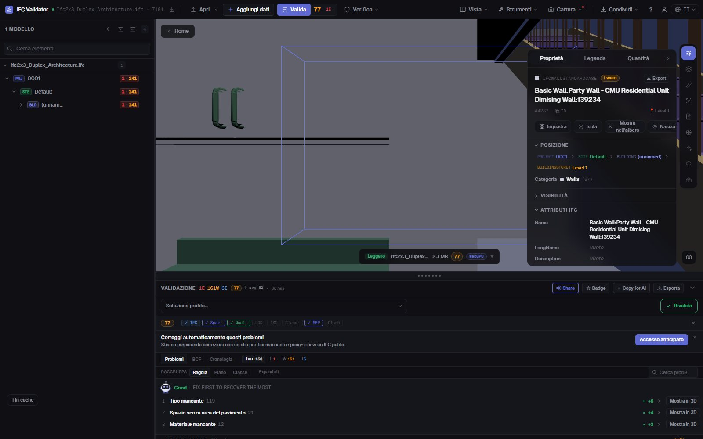
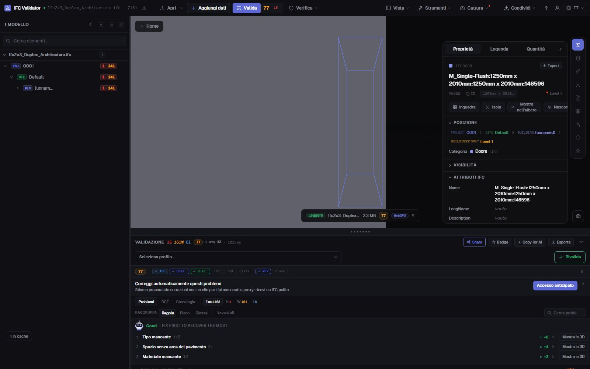

Editor IFC gratis
online, nel tuo browser
Apri un file IFC, seleziona un elemento e correggi ciò che non va: il nome, il LongName, il valore di una proprietà o il piano in cui si trova. Ogni modifica si può annullare e il risultato si esporta come IFC standard che il tuo software BIM riapre. Il file non lascia il tuo computer.
Modifica un file IFC — gratis →Senza account · Nessun caricamento · Nel tuo browser · Gratis

Cosa puoi fare
Modifica un IFC senza Revit, ArchiCAD né licenze
Per le correzioni che altrimenti rimanderesti all’autore: rapide, reversibili e salvate come un vero IFC.
Rinominare elementi
Cambia Name e LongName di qualsiasi elemento, o rinomina in una volta tutti i nomi duplicati o vuoti con uno schema ({class}, {storey}, {n}).
Modificare i valori delle proprietà
Cambia il valore di qualsiasi proprietà già presente nei set di proprietà dell’elemento (Pset_WallCommon, Pset personalizzati…).
Correggere i GUID
Rigenera con un clic i GlobalId duplicati o malformati — l’errore di esportazione più comune.
Cambiare piano
Assegna un elemento a un altro contenitore spaziale quando è stato esportato al piano sbagliato.
Annullare tutto
Ogni modifica è un comando con annulla e ripeti; il file originale resta intatto fino all’esportazione.
Esportare IFC o GLB
Scarica il modello modificato in IFC (stesso schema dell’originale) o in GLB per visualizzatori web e AR.
Schermate

FAQ
Domande frequenti
Esiste un editor IFC gratis online?
Sì. IFC Viewer Online è gratuito per qualsiasi uso, anche commerciale. Apri la pagina, trascina un .ifc e modificalo nel browser — senza installare, senza account e senza caricare nulla, perché il file viene letto in locale con WebAssembly.
Cosa posso modificare in un file IFC?
I nomi degli elementi (Name, LongName), i valori delle proprietà esistenti, i GlobalId e il contenitore spaziale di un elemento. Puoi anche rinominare molti elementi in una volta. Non è uno strumento di modellazione: la geometria non si modifica.
L’IFC modificato si apre in Revit, ArchiCAD o Solibri?
Sì. L’esportazione scrive un IFC standard nello schema del file aperto (IFC2x3, IFC4, IFC4x3) con le tue modifiche; qualsiasi software che leggeva l’originale legge quello modificato.
Il mio modello viene caricato da qualche parte?
No. Lettura, modifica ed esportazione avvengono nel browser. Nei DevTools vedi che nessuna richiesta contiene il file. Adatto a progetti sotto NDA e utilizzabile offline una volta caricato.
Posso verificare il modello dopo averlo modificato?
Sì — la stessa app verifica il file con 44 regole di qualità e assegna un Health Score da 0 a 100, così vedi il punteggio salire dopo le correzioni.
Correggi l’IFC da solo, in un minuto e senza rimbalzi.
Rinomina · Modifica proprietà · Correggi GUID · Annulla · Esporta IFC
Modifica un file IFC — gratis →